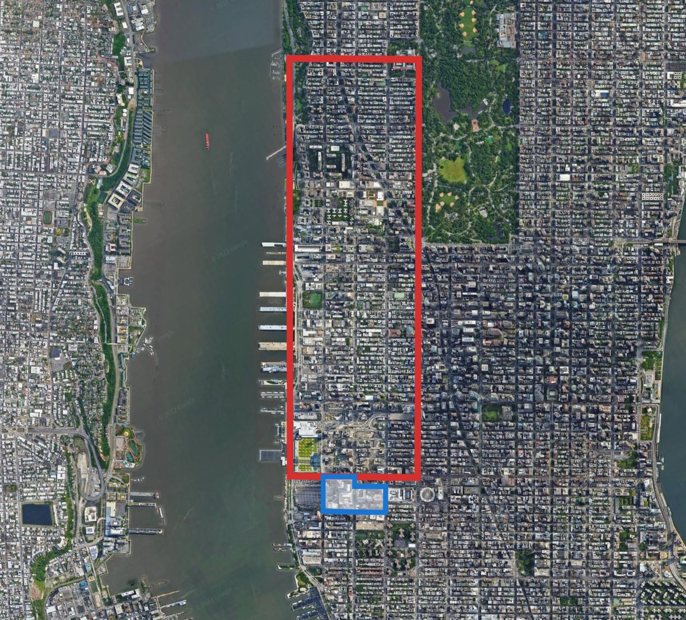
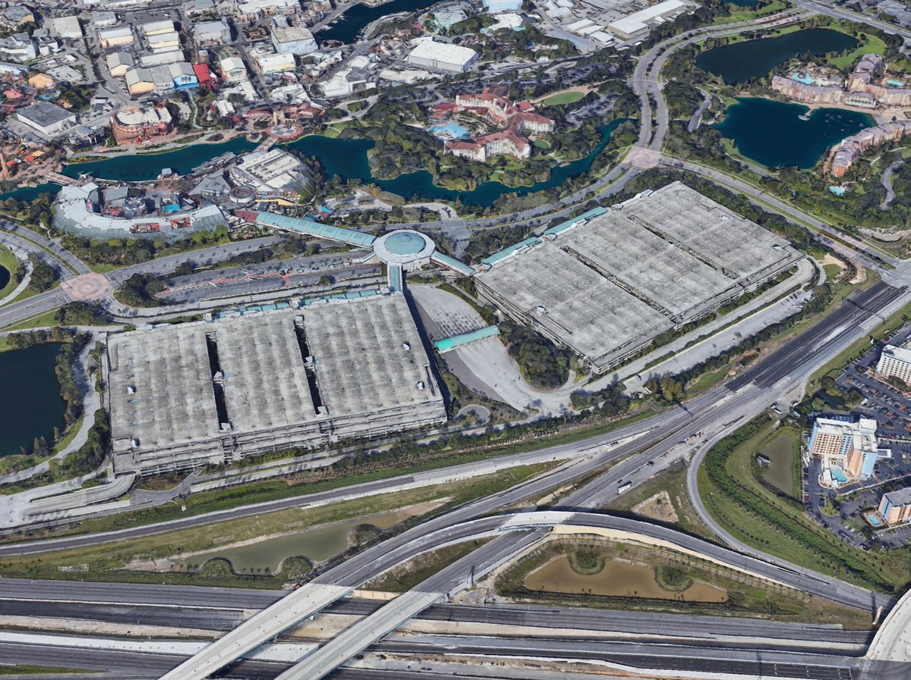

Parking Economics
Active Learning Module
What Is Opportunity Cost?
- Opportunity cost is the value of the next best alternative you give up when making a choice.
- Every resource (time, money, land) has competing uses.
- Choosing one option means sacrificing the benefits of another.
Opportunity Cost of Parking
- Land used for parking cannot be used for housing, offices, parks, or shops.
- Every parking spot has a hidden price tag: the value of what could have been built instead.
- When cities mandate minimum parking, they are choosing parking over every other possible use of that land.
Hudson Yards, NYC
- Largest private real-estate development in U.S. history.
- Housing, offices, retail, cultural space.
- $19 billion in annual GDP.
What would happen if this site had to follow typical U.S. parking mandates?

Hudson Yards + Louisville Parking Laws
- Louisville's parking minimums would require 160,000 spots.
- As surface lots: would cover the entire site and far beyond.
- The development as we know it would be impossible.

Even with Structured Parking
- Even with 6-story parking garages...
- It would still require 16x the land area of the project itself.
- The economics simply do not work with mandates.

What Is the Tragedy of the Commons?
- A commons is a shared resource that is free to use.
- When a resource is both rivalrous (my use reduces yours) and non-excludable (no one can be kept out), it tends to be overused.
- Each individual has an incentive to consume more, but the costs are shared by everyone.
- Classic examples: overfishing, overgrazing, traffic congestion.
Parking as a Commons
- Rivalrous: One car in a spot prevents another from parking.
- Non-Excludable: We choose not to exclude — street and commercial parking is provided free as a policy choice, not a law of nature.
- Result: Overuse, congestion, drivers cruising for spots.
- Solution: Pricing or management.
The Parking Paradox
- We treat parking as a commons — provided free to all.
- Then we worry it will be overused (because it is).
- So we mandate building more of these free commons.
- But we never ask: what is the opportunity cost of all that land?
We are trying to solve overuse by creating more of the thing we give away for free.
The Argument for Mandates
- Suppose a business builds less parking than its customers drive.
- Excess cars spill onto the street or into neighboring lots.
- If those neighbors charged for parking, the spillover is just more business for them.
- But since street and neighbor parking is free, the original business externalizes its parking cost onto everyone else.
Mandates force each business to internalize its own parking demand.
But is there a better way?
The Tokyo Alternative
Tokyo solves the same externality problem without mandates:
- No parking minimums: Developers build as much or as little parking as they choose.
- No free street parking: Overnight on-street parking is banned — the commons is eliminated.
- Proof-of-parking law: You must prove you own or rent a parking spot before you can register a car.
The cost of parking falls on the driver, not on every renter, shopper, and taxpayer.
Why Does This Work?
- No free commons → no overuse to solve.
- No mandate → no opportunity cost forced onto landowners.
- Parking becomes a private good — rivalrous and excludable.
- The market decides how much parking to build based on actual willingness to pay.
Result: Dense, walkable neighborhoods — and car owners still find parking, they just pay for it.
The Amsterdam Approach
Amsterdam takes a third path — reduce and price:
- Parking maximums: New developments face a cap on how many spots they can build — the opposite of U.S. minimums.
- Expensive street parking: Meters and permits at market rates — among the highest in the world.
- Removing spaces: The city is actively eliminating thousands of on-street spots, replacing them with bike lanes, greenery, and café terraces.
Why Does Amsterdam Work?
- High prices → only those who truly need a car drive into the center.
- Freed-up space → invested in cycling infrastructure and public transit.
- Revenue from parking → funds the alternatives (bikes, trams, walkability).
- No mandate → developers respond to actual demand, not a legal formula.
Result: Over 60% of trips in the city center are by bike.
Why Maximums?
Maximums help account for the negative externalities of cars (pollution, congestion, noise) not captured in the private cost of building parking.
- Building more parking → more driving → more pollution, congestion, crashes.
- These costs fall on everyone, not just drivers.
- A cap on parking supply forces developers to internalize some of these external costs.
Activity: Graphing the Market
Please take out your worksheets.
We will build the economic model step-by-step.
Step 1: Set the Stage
1. Label the Y-Axis: Benefits / Costs
2. Label the X-Axis: Quantity of Parking (Q)
Step 1: Solution
Your graph should look like this.
Step 2a: Marginal Benefit (MB)
- Marginal Benefit = the value of one more parking spot to society.
- The first few spots near a store are extremely valuable — customers need them.
- The 50th spot is less critical. The 500th? Almost worthless.
- So MB slopes downward: each additional spot adds less value than the last.
Step 2a: Draw the MB Curve
It should start high on the left (high value) and fall toward the right (low value).
Step 2a: Solution
Your MB curve should look like this.
Step 2b: Marginal Cost (MC)
- Marginal Cost = the cost to society of providing one more parking spot.
- The first spots are cheap — pave a small patch of unused land.
- But as you build more, you must use increasingly valuable land (or build expensive garages).
- This is the opportunity cost rising — each spot sacrifices more valuable alternatives.
- So MC slopes upward: each additional spot costs more than the last.
Step 2b: Draw the MC Curve
It should start low on the left (cheap) and rise toward the right (expensive).
Step 2b: Solution
Your graph should now have both curves.
Step 3: The Ideal World
Mark the quantity where society's benefit equals the cost (MB = MC).
Label it Qopt.
Step 3: Solution
This is the efficient amount of parking.
Step 4: The Reality (Free Parking)
Mark the quantity demanded when MB = 0 (no more benefit from another spot).
Label it Qfree.
Step 4: Solution
People consume parking until it has no value (MB=0).
Step 5: Counting the Cost
Mandates often force supply to match Qfree (or higher).
Shade the area where Cost>Benefit(MC > MB).
Step 5: Solution
This shaded area is destroyed
value.
Resources spent on parking that people value less than the cost to build it.
Step 6: But It Gets Worse
Many U.S. parking mandates were designed to provide enough parking for the 20th busiest day of the year.
Our MB curve represents an average day.
On the 20th busiest day, demand is much higher — the MB curve shifts up.
How much bigger is the waste?
Step 6: Start Fresh
Step 6: Your Graph
It should look like this.
Step 6a: Add the Peak-Day MB
This represents demand on the 20th busiest day — same slope, but shifted up because more people want to park.
Step 6a: Solution
Step 6b: Find Qpeak
This is Qpeak — the amount of parking mandates require.
Step 6b: Solution
Mandates force Qpeak spots to be built — far more than even Qfree on an average day.
Step 6c: The Real DWL
Past Qfree, the average-day MB is zero — that parking has no value at all.
Step 6c: Solution
This is the true deadweight loss
of parking mandates.
Built for the 20th busiest day, wasted on every other day of the year.
The High Cost of Parking
Shoup (2005) estimated the annual subsidy for off-street parking in the U.S.
| 2002 (Shoup original) | 2025 (CPI-adjusted) | |
|---|---|---|
| Low estimate | $127B | ~$230B |
| High estimate | $374B | ~$670B |
- In 2002, this was comparable to federal Medicare spending ($231B) or the military budget ($349B).
- Every year, we spend more subsidizing car storage than on many major social programs.
The Evidence: Opportunity Cost
Gabbe, Osman & Manville (2021)- Silicon Valley
- 13%of total land area devoted to parking.
- Over half of commercial parcels are parking space.
- Simulation:Reducing requirements since 2000 could have:
- Added space for 13, 000 jobs(37% increase).
- Created $1+ billionin annual payroll.
The Evidence: Induced Driving
McCahill et al. (2016)
- Found strong causal link between parking supply and driving.
- Increase from 0.1 to 0.5 parking spaces per person...
- ...Associated with 30 percentage point increase in auto mode share.
- More parking doesn't just accommodate driving — it causes it.
Parking & Driving: Cross-Section
More parking spaces → higher automobile mode share (R² = 0.87)

Parking & Driving: The Causal Evidence
Cities that added more parking ('60–'80) saw bigger increases in driving ('80–'00). R² = 0.86

The Evidence: Density & Sprawl
Manville, Beata & Shoup (2013)- LA vs NYC
- In NYC,
a 10% increasein parking requirements is associated with:
- 5% increase in vehicle density.
- 6% reductionin population/housing density.
- Conclusion: NYC shifts less driving cost into the housing market than LA does.
The Evidence: Behavior
Millard-Ball et al. (2020)- San Francisco Housing Lotteries
Natural Experiment using random assignment of housing.
- On-site parking availability significantly affects:
- Car ownership decisions.
- Driving frequency.
- Substitution away from public transit.
- It does NOTaffect employment or job mobility.
Parking Policy: Three Models
| 🇺🇸 USA (Mandates) | 🇯🇵 Tokyo (Market) | 🇳🇱 Amsterdam (Reduce & Price) | |
|---|---|---|---|
| New Development | Mandatory minimums | No minimums | Parking maximums |
| Street Parking | Free or cheap | Overnight parking banned | Heavily priced; spaces being removed |
| Who Pays? | Everyone — cost hidden in rent & goods | The driver — must prove parking to register a car | The driver — market-rate permits & meters |
| Result | Sprawl, hidden costs, overconsumption | Dense, walkable, market-priced | Cycling-first, reclaimed public space |
A Question of Justice
- Our MB and MC curves are based on people's willingness to pay.
- But willingness to pay depends on ability to pay.
- So our "optimal" outcome is efficient for a given distribution of income.
How does charging for parking impact low-income people?
Two Identical Apartments
You own two cars. Which is the better deal?
Option A
$2,000/month rent
Includes 2 parking spaces
Option B
$1,600/month rent
Parking available at $200/space/month
With two cars, both cost $2,000. So what's the difference?
The Power of Choice
- Option B lets you drop a car and save $200/month.
- Or get a third car for $200 more.
- Option A forces you to pay for 2 spaces whether you use them or not.
Of course they wouldn't truly be identical — Option A has more parking, more traffic, potentially different ambiance and walkability.
Should the government outlaw Option B?
Should the government outlaw Option A?
A Different Offer
It costs the city $2 per trip to provide parking in the city center.
A low-income resident makes 25 trips per month.
Option A
Free parking every month
Option B
$50 cash every month
Which is the better deal?
Better for the Person
- Free parking is worth exactly $50 — if you drive every trip.
- $50 cash gives you the option to bus, bike, walk, or skip a trip.
- Every trip you don't drive, you keep the $2.
Cash ≥ free parking. It's worth at least as much, and more if you have any flexibility.
Better for Society
- Every time the person uses the parking, that is a real economic cost of $2.
- The $50 is a transfer — it moves money but does not use up resources.
- Every trip they choose not to drive saves $2 in real resources.
That $2 saving is a transfer to a poor person to reduce poverty — at zero economic cost.
Who Does Free Parking Help?
- $50 cash can be targeted to poverty.
- Free parking is targeted by car ownership.
- Car owners are disproportionately higher income.
Free parking is a subsidy that mostly flows to those who need it least.
Key Takeaways
- Parking is not free.The cost is just hidden in rent and goods.
- Mandates create DWL.They force over-supply of a costly asset.
- Pricing>Mandates.Managing demand (Tokyo) is more efficient than forcing supply (USA).
Markets vs. Maximums
- The Tokyo model lets the market set the quantity of parking — efficient, but it does not address the negative externalities of driving (pollution, congestion, crashes, emissions).
- The Amsterdam model caps parking supply, effectively making car users bear more of those external costs.
There is a policy argument for maximums — they act as a corrective for externalities the market ignores.
Minimums need to go. They push in exactly the wrong direction.